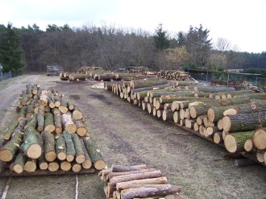

GPS-Holz
Das Holz mit einem guten Gefühl: Sie erhalten den eindeutigen Nachweis, wo der Baum gestanden hat, aus dem Ihr Brett gesägt wurde.
0172 1456171
Sie wissen, woher Ihr Holz kommt
Mit GPS-Holz können Sie sicher sein, wirklich nachhaltig erzeugtes und unbedenkliches Holz zu bekommen. Sie können es mit gutem Gefühl verbauen und stolz auf Ihren Beitrag zum Umweltschutz sein.

Vom Baum bis zum Balken
Auswahl und Nummer
Die zu fällenden Bäume werden nach forstwirtschaftlichen und nachhaltigen Gesichtspunkten ausgesucht und bekommen eine eigene Nummer, zum Beispiel Nr. 18. Wir fotografieren den Baum und erfassen seinen Standort per GPS.
Fällung und Stammstücke
Nach der Fällung werden die Stammstücke vom Stammfuß aufwärts mit der Baumnummer und der Stammstücknummer versehen: Das erste Stück bekommt die Nummer 18/1, das zweite 18/2 und so weiter.
Markierter Wurzelstock
Auf dem Wurzelstock, der im Wald bleibt, wird die Stammnummer mit wetterfester Kreide vermerkt. Sie bleibt etwa zwei Jahre sichtbar.
Einschnitt und Kennzeichnung
Auf unserer betriebseigenen Präzisionssäge entstehen aus den Stammstücken Bretter, Balken oder Bohlen. Jedes Fertigholz bekommt mit Ölkreide Stammnummer, Stammstücknummer und eine laufende Nummer, etwa 18/2/4. So ist sogar erkennbar, in welcher Höhe es im Stamm saß.
Ihre Unterlagen
Zum Holz erhalten Sie das Foto, die genauen GPS-Daten, das Jahr der Bestandsbegründung und die ortsübliche Lagebezeichnung. Damit können Sie den ursprünglichen Standort, zum Beispiel Ihres Schreibtisches, selbst besuchen.
Nachweis ohne Verwechslung
Ein Probenvergleich zwischen Sägeholz und Wurzelstock belegt die Zusammengehörigkeit. Manipulationen oder versehentliche Verwechslungen, wie sie bei üblichen Zertifizierungen theoretisch denkbar wären, sind damit ausgeschlossen.

Holz direkt aus dem Wald
Ob ein Raummeter Kaminholz, Bohlen nach Maß oder ganze Lkw-Ladungen Rundholz: rufen Sie uns an, wir beraten Sie gern.
Kontakt aufnehmen